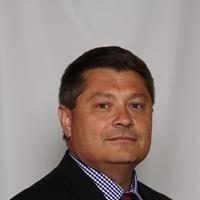

Our Team
Chris Whatley, Chief Strategist
The disciplined investment process behind Saint Francis Capital carries his fingerprints — and his title.

Chief Strategist
Chris Whatley
October 7, 1962 — October 22, 2015
Chris passed away unexpectedly on Thursday, October 22, 2015, at the age of 53. Chris's legacy, his heart, his soul, will live on in me until I also leave this earth and enter the presence of God. Because Chris was, first and foremost, a teacher, his rules for portfolio construction and management will live on as well. Knowing Chris as I did, I believe this is what he would be most proud of, aside from his family: that his legacy as a teacher continues to make our work for you a success. For that reason, Chris will forever remain our Chief Strategist.
— Kaye Riggs, Founder & President
A career built on discipline
Over 30 years in the advisory industry
Chris served as Chief Strategist for Saint Francis Capital, bringing more than 30 years of experience in the advisory industry — work that spanned business owners, high-net-worth clients, and retirees. He consulted on portfolio construction and execution for independent advisors managing a combined $4 billion in assets, including advisors at some of the largest firms in the industry.
Chris graduated from the University of Georgia with dual degrees in Economics and Finance. For him, wealth management was never just a vocation — it was, in his words, an “advocation,” and he worked tirelessly on behalf of his clients. Outside the office, he enjoyed studying the financial markets and renovating houses.

His impact on Saint Francis Capital
The teacher behind our discipline
Kaye had a clear sense of what pilots needed from a financial advisor — but it was Chris, the teacher, who helped turn that instinct into a repeatable, disciplined investment process.
I had a very clear understanding of what was missing from investing and planning for pilots, but Chris, the teacher, helped solidify our disciplined investment process that has served our clients so well.
— Kaye Riggs, Founder & President